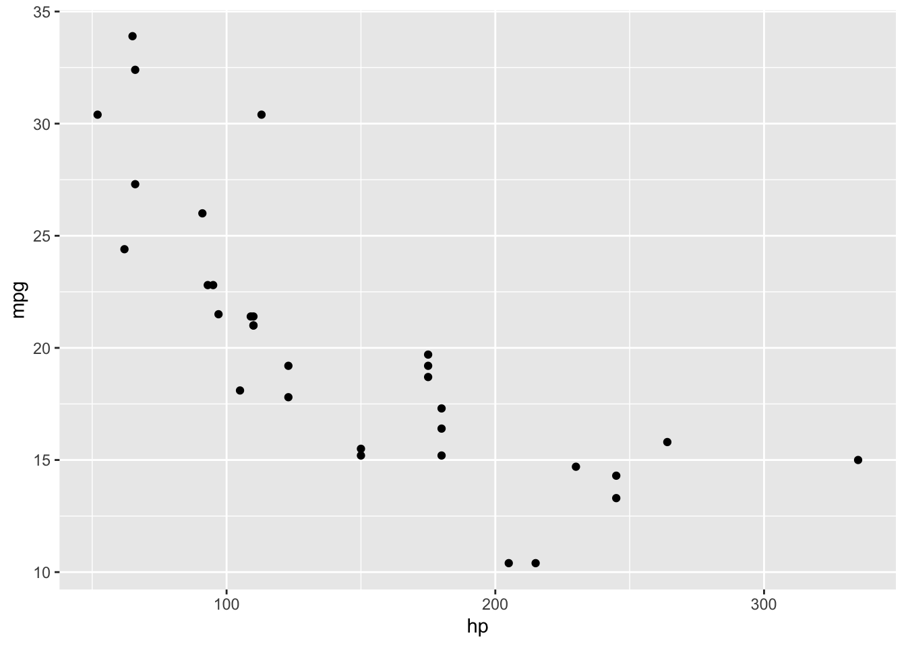

Our Glorious King
Lebron James
Abstract
LeBron’s legacy is large on the statsheet, but extends much further than just putting the ball in the basket. Through his greatness, he has broken records, cultivated lifelong friendships through teammates, and made those around him into better players. His over 20 year career has changed fundamentally changed the game of basketball, which is displayed through the evolution of his playstyle.
Citations, cross-referencing, and linking between pages
Quarto website features
Either approach will take either a filepath to a stored file or a URL to an image or gif. Width can be specified as a percentage of the width of the page (0% to 100%; my preferred approach) or as a fixed number of units (e.g. 400px, 3in, 10cm).
I can’t imagine a scenario where students should or would include videos within their blog, but Quarto provides guidance on embedding videos, as well.
Note
The first figure of your blog will be used as the display image on our course’s landing page!
Panel tabsets
Use the following format to add information or tables or visualizations in tabset panels.
Some information in one tab
Some information in a different tab
#LeBron and His Teammates
Now that we have established Lebron’s legacy through his own statistics as well as the successes of his teammates, let’s take a deep dive into his connections with teammates. In addition, we can observe the changes in the game of basketball and the evolution of his career through the years that he played on each respective team.

##The Network

The network is weighted based on the total amount of games played with other players. These are 18 players who have played over 100 games with LeBron. As we can see, many of the other nodes (players) have a significant amount of edges connected to them as well. We can see how LeBron cultivated a strong culture in many different areas, especially early in his career.
Here is a list of teams he has played for and the years he was there, as well as the players in the network who played on these teams.
Cleveland Cavaliers (2003-2010): - Zydrunas Ilgauskas - James Jones - Anderson Varejao - Sasha Pavlovic - Danny Green Miami Heat (2010-2014): - Zydrunas Ilgauskas - James Jones - Dwayne Wade - Mario Chalmers - Chris Bosh
Cleveland Cavaliers (2014-2018): - Anderson Varejao - Dwayne Wade - Tristan Thompson - Kevin Love - Mo Williams - Kyle Korver - Kyrie Irving - Channing Frye - Iman Shumpert - Richard Jefferson - Matthew Dellavadova
LA Lakers (2018-2025): - Tristan Thompson - Anthony Davis - Danny Green
As we can see, there is a large overlap between teams. LeBron sticks with his teammates and builds friendships with them over multiple seasons, resulting in success for both him and others. In addition, we can see how much his game has evolved as he has the most seasons played in LA but a lot less players who have played with him for over a season. It seems as if both his strategy for success is changing, alongside the leagues general strategy for team building and winning has evolved, largely due to how much success he had in his runs with both the Heat and the Cavaliers.
Layouts for tables and visualizations produced by code chunks
For details on how to layout subfigures from multiple graphs produced by the same code chunk, see the examples in the Knitr tabs of the sections on figure layouts, subcaptions, and custom layouts.
The same syntax shown across the linked examples can be used to create subtables by replacing fig-cap and fig-subcap with tbl-cap and tbl-subcap.
Two examples in Table 1 and Figure 1 below are borrowed and slightly modified from the linked sections.
| speed | dist |
|---|---|
| 4 | 2 |
| 4 | 10 |
| 7 | 4 |
| temperature | pressure |
|---|---|
| 0 | 0.0002 |
| 20 | 0.0012 |
| 40 | 0.0060 |


